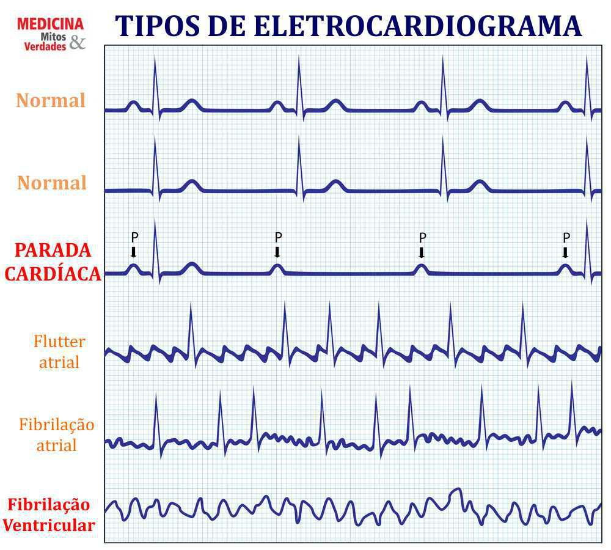
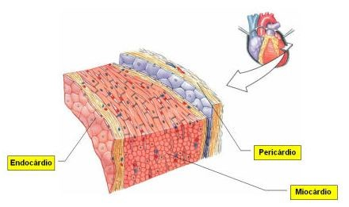
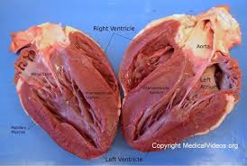
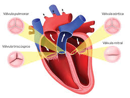

O coração é um importante órgão muscular formado principalmente por musculo cardiáco, que faz parte de um sistema cárdio vascular, O coração gera seu próprio impulo elétrico sem depender da função cerebral.

Coração é um órgão localizado na parte inferior do mediastino médio, encontra-se na cavidade torácica, mais precisamente na região posterior ao Osso externo e acima do músculo diafragma. Esse órgão tem o tamanho aprooximado de uma mão fechada e apresenta maior parte da sua maa á esquerda da linha mediana./p>
É conseguido graças a uma massa de célula epecializadas, encontradas nesse órgão, chamado de NÓSINOATRIAL. Essa massa de células está na parede do átrito direito e é responsável por gerar impulso elétrico.
*ENDOCÁRDIO: camada mais interna e é formada por endotélio que está sobre uma camada subendotelial delgada de tecido conjultivo.
*MIOCÁRDIO: É a camada média do coração e a mai espessa, é rico em células muscúlares cardíacas, sendo responsável pela capacidade de contração desse órgão, de modo a garantir que o sangue siga para o corpo.
*PERICÁRDIO:É uma espécie de saco invaginado constituído de uma camada mais externa, chamada de pericárdio pariental, e de uma camada mais interna, chamada de pericárdio viceral, esse é o ultimo que adere ao coração e forma a camaada mai externa do órgão "epicárdio"
*ÁTRIOS: apresentam paredes relativamente delgadas e funcionam como câmaras receptoras de sangue.
*VENTRÍCULOS:apreentam paredes grossas, uma vez que sua contração garante que o sangue siga para o pulmões enquanto a do lado esquerdo garante o eu impulso ao restante do corpo.
válvulas no coração faz com que o refluxo do sangue não ocorra e ele siga sempre uma mesma direção, no total existem quatro válvulas semilunares,duas valvulas atrioventriculares e duas valvulas semilunares, as primeiras situam-se entre cada átrio e cada ventrículo, já as segundas estão nos dois locais por onde o sangue sai do coração.
